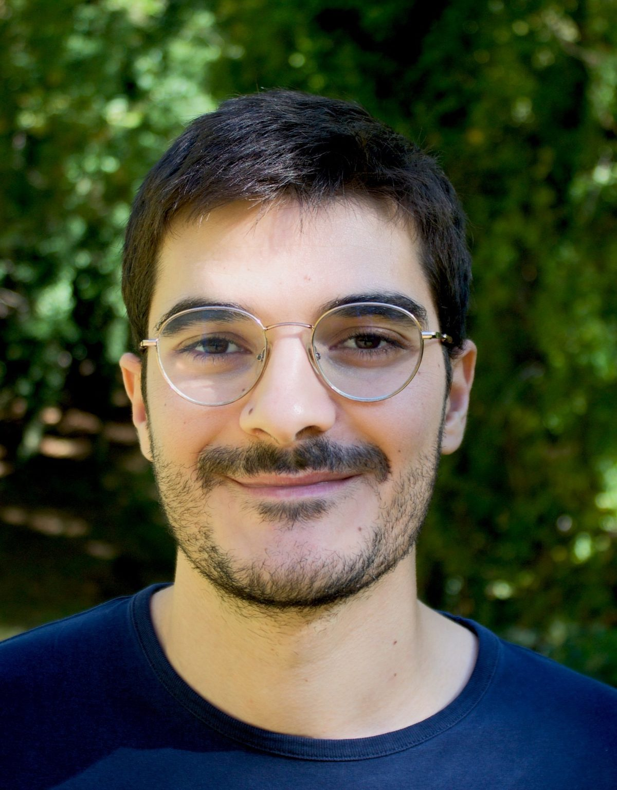
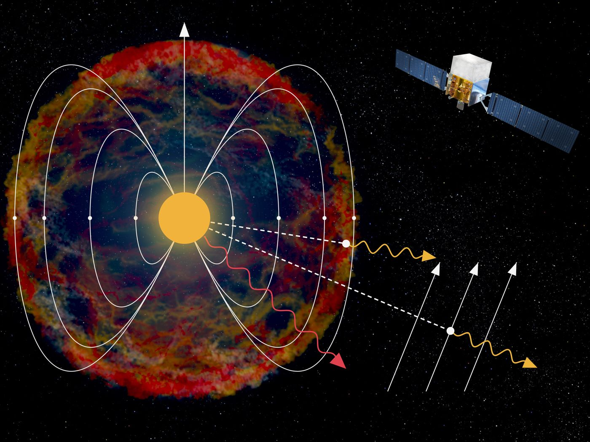
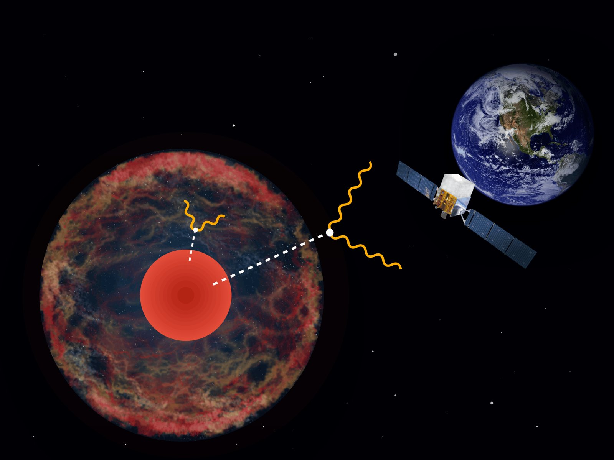
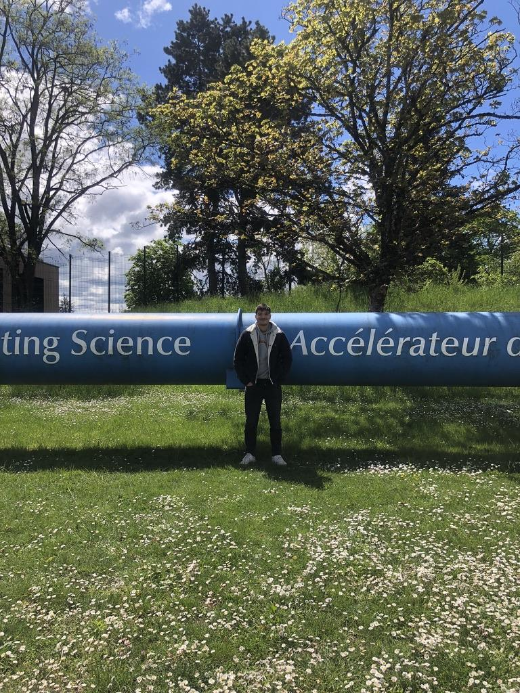

i · Materia caliente y densa
Estrellas y supernovas como fábricas de axiones
Las supernovas de envoltura despojada, Betelgeuse, el Sol y las estrellas masivas de la galaxia M82 producen axiones. NuSTAR y Fermi-LAT son los detectores.

Soy Francisco, doctorando en física de astropartículas en la TU Dortmund y la Universidad de Zaragoza. Uso las estrellas y las supernovas como laboratorios para buscar axiones y otras partículas débilmente interactuantes con telescopios de rayos X y gamma.
Doctorado previsto en sep 2027 · disponible para un posdoc desde oct 2027
Sep 2026 · Estancia de investigación
Tres semanas en la Universidad de Padua
Misión científica de corta duración de COST sobre la conversión turbulenta axión–fotón en M82.
2026 · Nuevo artículo
Small progenitors, large couplings
Phys. Rev. Lett. 137, 061004. Autor de correspondencia.
Del núcleo de una estrella a un fotón en un telescopio. Calculo cómo se producen los axiones, modelo las estrellas que los producen y analizo yo mismo los datos de rayos X y gamma.
i · Materia caliente y densa
Las supernovas de envoltura despojada, Betelgeuse, el Sol y las estrellas masivas de la galaxia M82 producen axiones. NuSTAR y Fermi-LAT son los detectores.
ii · Conversores a escala cósmica
Cada supernova de la historia cósmica se suma a un fondo difuso de axiones. Los cúmulos de galaxias son imanes de megapársecs de tamaño que pueden incluso convertir ondas gravitacionales de alta frecuencia en luz.
iii · Instrumentación
El inventario de ópticas de vidrio de NuSTAR, medidas en sincrotrón y simulaciones ópticas para los telescopios de rayos X del Observatorio Internacional de Axiones (IAXO).
INSPIRE-HEP, 12 oct 2026 · Los autores aparecen por orden alfabético, como es habitual en el campo, así que cada artículo indica cuál fue mi papel.

Publicado en Physical Review Letters
Las estrellas que pierden sus capas externas antes de explotar tienen los campos magnéticos superficiales más intensos de todas las progenitoras de supernova, ideales para convertir axiones en rayos gamma.
Lideré el análisis · PRL 136, 171001 (2026)
Leer el artículo
Publicado en Physical Review Letters
Las progenitoras compactas dejan escapar los fotones de partículas que se desintegran cerca de la estrella, lo que permite explorar acoplamientos que SN 1987A no alcanza.
Lideré el análisis · Autor de correspondencia · PRL 137, 061004 (2026)
Leer en arXivPublicado en Physical Review Letters
Las partículas pesadas producidas en las estrellas masivas de M82 se desintegrarían en rayos X durante su viaje de 3,5 Mpc hasta la Tierra. La desintegración no necesita campo magnético, lo que elimina la mayor incertidumbre de las búsquedas por conversión.
Lideré el análisis · PRL 134, 171004 (2025)
Leer en arXivNuSTAR · Oct 2025
Noticia de la misión NuSTAR sobre las búsquedas de axiones en el Sol, Betelgeuse y M82, con comentarios míos como primer autor.
Phys.org · Jun 2025
Sobre las búsquedas de axiones en rayos X a escala de galaxias enteras, incluido nuestro artículo sobre M82.
Physics (APS) · May 2025
Michael Schirber sobre las búsquedas de axiones en M82 y M87 publicadas en Physical Review Letters.



Como responsable de redes sociales del CAPA, el centro de astropartículas de Zaragoza, dirigí el equipo de contenidos: guiones, grabación y edición.
He atendido stands en la Noche Europea de los Investigadores de Zaragoza, he participado en la jornada de puertas abiertas del Laboratorio Subterráneo de Canfranc y he llevado detectores a grupos escolares. En español o en inglés.


Jun 2026
4th COSMIC WISPers Training School, Corfu Summer Institute, Grecia
Jun 2026
16th International Workshop on the Identification of Dark Matter (IDM 2026), Zaragoza, España
Mar 2026
DPG Spring Meeting, Section Matter and Cosmos (SMuK), Erlangen, Alemania